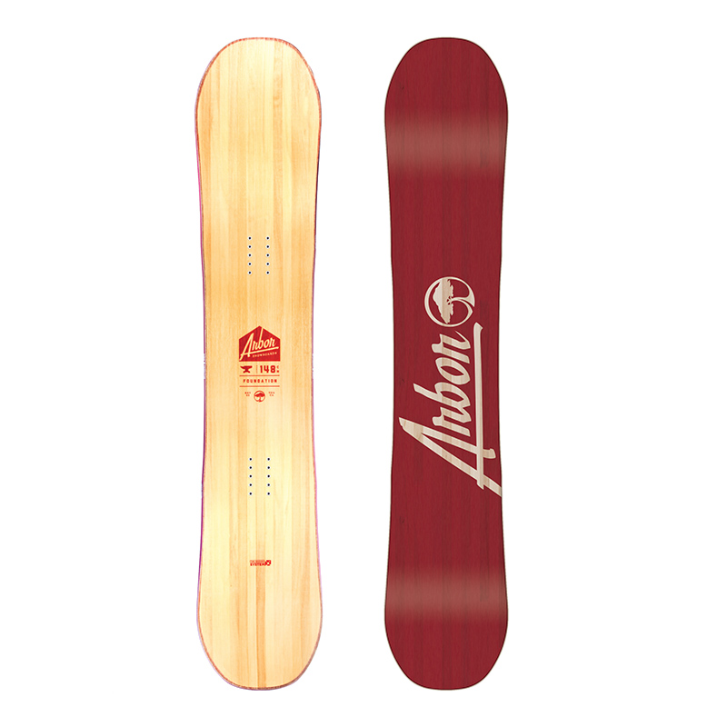

Foundation - стартовая площадка в коллекци и Arbor. Здесь понимают, что первый опыт - самый
запоминающийся, поэтому с особой ответственностью отнеслись к разработке Foundation. Качественно исполненный,
стильный сноуборд для первого-второго сезонов катания получил технологию РокерСистем для простого и успешного
вкатывания в сноубординг.
- Жесткость: 3/10
- Прогиб: Rocker
- Прозрачный топшит
- Вудкор: СинглМальт
- База: Экструдид
- Стекловолокно: Биакс
- 2х4 10-крепеж
- 360 канты